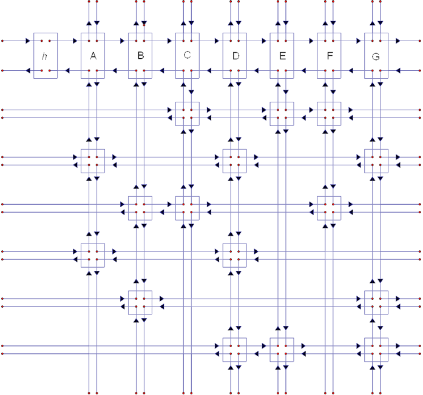

Lab 3: Dancing Links
Lab Submission instructions
Checkout your subversion directory:
svn co https://phoenixforge.cs.uchicago.edu/svn/cnetid-cs162-win-15and create a directory for Lab 3
cd cnetid-cs162-win-15
mkdir lab3
svn add lab3 # make it a working copy
cd lab3
touch README # README is now a working copy
svn add READMEand then you can start working.
You get two 24-hour lab extensions this quarter, email me: [my last name] at cs dot uchicago dot edu for them. Make sure that you run
svn commit -m "update"frequently as you work on the lab so that you will definitely have a submission come the midnight deadline. Late submissions are not accepted: the time-stamp counts. Ensure that your lab code runs on the school machines. If you are having difficulty working with the lab machines then see me during office hours before the deadline.
Please ensure that each lab submission is in a distinct folder. For instance, for this lab the path to the lab subdirectory should be:
cnetid-cs162-win-15/lab3The README file
This should contain your name, a list of files you are submitting, and at least a sentence or two about each file.
Additionally make sure to add comments to your code explaining each of the procedures you use.
Dancing Sparse Matrices Via Circular Linked Lists
You have begun to get your feet wet with C. This lab will extend some of the thinking you have encountered in class. I have remarked in lab that linked lists can cause a program to slow down because of cache-misses. This lab focuses on a specific use case for linked lists where they are very useful. You are going to build sparse matrices that dance with circular linked lists.
To provide some context for what we are achieving in this lab it is useful to think about data structures in general. A data structure is represented using words which are a set of finite sequences of bits and each word has an address. Operations on data structures correspond to manipulating these words. The content of the words (the bits) determine the data structure’s state. An instance of a data structure is a set of words on a physical machine. The most basic operations for a data structure are
- Create a new instance of the object
- Test whether two data structures are the same
- Destroy the object and free the memory
To define these operations we need to understand the data structure we are working with abstractly.
As a note, the interfaces we write for performing operations to list or matrix set will often contain pointers. This is a good convention because it allows a natural method for error-checking where if the operation fails you may return a null pointer. Then
if (!(Output)) {
printf("Error\n");
}An Entrée
I take this completely from Knuth. Before we jet into the main course we must first understand linked lists. We first consider the doubly linked circular list (DLCL). Such a linked list has a handle which we define as struct List. The elements in the list are instances of struct ListNode. Each list will contain an element head that serves as the “front” of a list and makes implementation much easier. The analogous element in Haskell is []. We do not treat the value field of head as special. The trivial DLCL has only head and is considered empty so list->count == 0 in that case. A non-empty list has other instances ListNode which hold the data and has non-zero count. In this lab we are more interested in the linking structure so the data we consider is simply int, although such lists are used for modeling more generic data as well.
To get started:
struct ListNode;
struct List;
typedef struct ListNode {
int value;
struct ListNode *succ;
struct ListNode *prec;
struct List *handle;
} ListNode;
typedef struct List {
int count;
ListNode *head;
} List;This code tells the C compiler how to layout the memory for a doubly linked list. Note the use of typedef so that I don’t have to write struct many times through the code. Once you have these declarations C knows how to set the bits in memory, access their values, and interpret them. This code by itself is not very useful, however. We need to have some basic operations
- Implement a list constructor function. Call it
List_createand it should return a pointer to a listList *that is newly allocated. (You will need to do use exercise 3 here). Check for failures or if there are invariants that have been violated. A list should always have aheadand each node in a list should have asuccandprecfield that have a meaningful (non-NULL) reference. If these can’t be preserved then return aNULL. You will need to allocate memory to thehead.
When you’re done processing a list it is good practice to cleanup memory (not doing so leads to memory leaks!) so
- Implement a destructor function. Call it
List_destroythat frees the memory used by the list back up. The input should just be a pointer to a listList *and the list is possibly non-empty (i.e. may have someListNodesin it). Avoid memory leaks by removing all internalListNodes.
Lists are a compound type and we also need constructors and destructors for ListNode. Note that the instances of ListNode contained in a list (e.g. the head or any other element) should always have a defined succ and prec field.
- Implement a
ListNode_createandListNode_destroy. Again, if there is some problem returnNULL. Nodes should always have some reference to a list either through thehandlepointer or via thehandlepoints of theirprecandsucc.
Instances of ListNode are only interesting when they are part of a list and should generally not be used independent of a given list.
- Write a function
List *ListPush(ListNode *x, ListNode *succ)which takes a node and pushes it onto a list given its successor in that list. The implementation should be quite simple. The return pointer can beNULLin the case of a failure but otherwise return a pointer to theList *handle to indicate success. An analogous function can be writtenList *ListPushValue(int value, ListNode *succ). We can also write removal functionsList *ListPop(ListNode *x)where theList *is either theListinstance that no longer hasListNode *xor aNULLpointer to indicate failure. Keep in mindheadshould always be present in the list and its value does not matter (and should not be used).headis analogous to[]in Haskell and the list handleListis the name assigned to the list in Haskell.pushandpopoperations should not operate onhead(think of this like a type annotation on the physical hardware). All of these functions return pointers, make sure that if they are called on an ill-formedListor if they can’t be completed without violating one of the invariants then returnNULL.
The ListPop function deserves further comment. Linked lists are strongest when traversals of the list are rare relative to inserations and deletions to the list. So, when we implement a linked list we are often intending to reinsert elements that have been removed. Therefore, it does not make sense to free memory from everything that gets popped since we may want to put the element back in the list, observe that doing so is quite easy (it should be quite similar to the list remove code):
(x->succ)->prec = x;
(x->prec)->succ = x;- Implement
ListReinsertwhich reinserts aListNodeinto the list. By the same token we also want a functionListPopDestroythat will pop an element and destroy the node.
Finally, just to ensure that we can work with these List instances in a particular way we also need to be able to check equality.
- Implement Equality Testing. Two instances of
Listare equal if they have the same number of nodes and the nodes are in one-to-one correspondence with each other respecting the link structure and node values.
Knuth’s Toroidal Sparse Matrix Representation
We are going to implement a sparse matrix representation using DLCLs. The representation in graphic form is 
You may think of a toroidal matrix representation as a Pacman game field (minus the ghosts and barriers), each matrix cell is connected to its four neighbors: matrix cells on the boundary wrap around to the other side. We will make this precise. Let A ∈ {0, 1}n × m be a Boolean n by m matrix (so n rows and m columns). We assume that most of the entries of the matrix are zeros (i.e. we assume the matrix is sparse) so rather than explicitly storing the matrix in an array we instead only store the non-zero elements. We further assume that the matrix is binary so that the non-zero entries need only store their positions and do not need to store any magnitude information.
Using our model of DLCLs as a model template the next exercises involve constructing a column-based toroidal matrix representation. Each non-zero entry of the matrix is a struct MatrixNode and these have six fields left, right, up, down, value, and column. The pointers left, right, up, and down should always refer to a struct MatrixNode instance. A key invariant is that they should not refer to NULL. The column field will refer to a handle for the column.
The n × m possible entries in a matrix are
$$\begin{bmatrix} A_{1,1} & A_{1,2} & \cdots & A_{1,m}\\ A_{2,1} & A_{2,2} & \cdots & A_{2,m}\\ \vdots & \vdots & \ddots & \vdots \\ A_{n,1} & A_{n,2} & \cdots & A_{n,m} \end{bmatrix} $$
- Write a declaration for
MatrixNodemirroring theListNodedeclaration given above.
The representation we pick is that the columns of A are DLCLs so that column j is denoted by Aj and the non-zero entries of Aj are represented with struct MatrixNode instances. Our representation of the DLCL column also needs a head node as well as a handle. We may think of head as being an element A0, j which does not represent an entry of the matrix but is used to make insertion and deletion from a column convenient. The MatrixNode instances in a column can be sorted from top to bottom as they appear in the matrix. The up field of a MatrixNode should point to the non-zero entry immediately above it, the top entry should point to head, and the up field of head should wrap around and point to the bottom element. Similarly, the down element should point to the next element of the list. The down field of head should point to the top element, and the down field of the bottom element should point to head (once again wrapping around–consult the diagram at the top).
- Implement
MatrixNode_createandMatrixNode_destroy. Since we do not have the handle yet do not worry about the topology for the moment these are just for the data objects themselves.
To make this data structure useful, though, we need a handle. This handle is declared as a struct MatrixColumn which has fields left, right, head, size, name, and root. name is used for printing and should be a char (since we don’t expect many columns in our matrix), size should represent the number of nodes in the list. For the moment we defer the discussion of left and right but they will point to adjacent columns. root is a pointer to the matrix handle.
- Implement
MatrixColumn_create,MatrixColumn_destroy(for the create constructor think about what thesizefield should be and whether any nodes should be created). Again returnNULLif something goes wrong. A matrix column instance will have aMatrixNodefor each non-zero element as well as one representing theheadof the column.
However, further operations on the column cannot be considered until we define the relationship between separate columns. To work with the columns we declare a struct Matrix which will serve as a handle for the whole matrix. Matrix should have fields height, width, and head_column (whose functionality should be predictable at this point). Like the columns it is a DLCL but over MatrixColumn instances.
- Implement
Matrix_createandMatrix_destroy. Again returnNULLif something goes wrong (e.g. if some invariant that should hold for DLCLs is violated).
To get a basic feel for how Matrix works it is useful to implement a constructor for simple matrices. Note that when constructing matrices there will be adjacent non-empty columns and the MatrixNodes in those columns should use the left and right fields: i.e. for each non-empty row we can think of the elements as being arranged in a ring. In the case of an identity matrix each row has only a single element:
$$\begin{bmatrix} 1 & & & \\ & 1 & & \\ & & \ddots & \\ & & & 1 \end{bmatrix} $$
so the left and right fields should loop back onto themselves. In the matrix below
$$\begin{bmatrix} 1 & 1 & & 1 \\ & 1 & & 1 \\ & 1 & & \\ 1 & & & 1 \end{bmatrix} $$
(A1, 1) − > left points to A1, 4 and (A1, 1) − > right points to A1, 2. Element A3, 2 has left and right fields that wrap around to itself. The up and down fields are as you would expect.
- Implement a function
Matrix_simple_examplethat creates the 4 × 4 matrix above, be sure to properly capture the topology and the various data fields we have been discussing. The column names should start with A and have the same naming scheme as excel columns. Implement a functionMatrix_identity(int n)which returns a new matrix that is the identity matrix of dimensionn.
Now that we have some simple matrices to play with we can write the most important debugging tool:
- Implement a function
Matrix_printthat display a matrix, be sure to make the formatting nice: display the column names and print the zeros and ones that appear in the matrix.
You also may have noticed something. In exercise 10 we encounter a matrix that does not have a unique representation. Keeping that in mind implement an equality testing function:
- Implement
Matrix_equal.
Generating Random Numbers
To get a sense of matrices it will be useful to be able to generate random matrices. The goal here is not to delve too deeply into random number generation but suffice to say that all we have are pseudo-random number generators and these are not perfect random integers so some care has to be taken to generate random numbers within a specified range. The pseduorandom number generator generates a number in the range [0,RAND_MAX] inclusive so if I want to generate a number in the range [0,n] one simple algorithm
// print_rand.c -- print a random number within a range
// clang -g -Wall -o test_rand test_rand.c
#include<stdio.h>
#include<stdlib.h>
#include<time.h>
int main() {
long max_val;
printf("Please type the maximum value in the range you wish to generate: ");
scanf("%l", &max_val);
long number;
srand ( time(NULL)); // seed the random number generator
do {
number = rand();
} while ( number > max_val);
printf("%l\n",number);
}This works because each number in the range [0,n] has roughly equal probability so if I only take numbers in that range then I end up with equal chances on all those numbers. A problem occurs if n is much less than RAND_MAX because that while loop could take far too long to actually generate a number. So what we do is divide RAND_MAX into blocks of size n and leave off the remainder:
// print_rand.c -- print a random number within a range
// clang -g -Wall -o test_rand test_rand.c
#include<stdio.h>
#include<stdlib.h>
#include<time.h>
int main() {
long max_val;
printf("Please type the maximum value in the range you wish to generate: ");
scanf("%l", &max_val);
int number;
srand ( time(NULL)); // seed the random number generator
long max_bound = RAND_MAX/max_val * max_val;
do {
number = rand();
} while ( number > max_bound);
number %= max_val;
printf("%d\n",number);
}The code RAND_MAX/max_val * max_val note that integer division works by truncation so 0/3 == 0, 1/3 == 0, 2/3 == 0, 3/3 == 1, 4/3 == 1, etc. so that if
a = qb + r
where 0 ≤ r < |b| then in C a/b = q and a % b = r. We can then test how long it takes to generate a given number using the clock() command and the CLOCKS_PER_SEC macro. Here clock_t is a type that represents the number of clock ticks.
// print_rand.c -- print a random number within a range, see how long it takes to generate the number
// clang -g -Wall -o test_rand test_rand.c
#include<stdio.h>
#include<stdlib.h>
#include<time.h>
int main() {
long max_val;
printf("Please type the maximum value in the range you wish to generate: ");
scanf("%l", &max_val);
clock_t start, end;
int number;
double cpu_time_used;
int i;
start = clock(); // begin testing how long it takes to run the program
srand ( time(NULL));
long max_bound = RAND_MAX/max_val * max_val;
do {
number = rand();
} while ( number > max_bound);
number %= max_val;
for (i=0; i != number; ++i)
printf("%d\n",i);
end = clock();
cpu_time_used = ((double) (end - start))/ CLOCKS_PER_SEC;
printf("cpu_time_used=%f\n",cpu_time_used);
}Generating Random Matrices
Given that you can generate a random number you can now generate random subsets of a desired size. The trick is to think about the bits of the number you generate (i.e. think about how many C integers you could be generating less than 32 and what that says about sets of size 5). x & 1 tests if the last bit of x is one and x >> 1 or x/2 shifts the bits of x to the right so that the least significant bit is lopped off: e.g. 10011 >> 1 == 1001. With random sets you are now able to generate random matrices. Each column of the matrix is simply a random set of entries
- Implement
Matrix_random(int n)which creates a new matrix instance that has columns drawn randomly from the set['A','A'+n-1](e.g. ifn==2then['A','B']since'A'+2-1 == 'B'). For each of the non-zero columns draw a random subset of elements for the non-zero rows. Implement a program that takes an integernand prints a random boolean matrix.
Using the Matrices - Extra Credit
Now we turn our matrix representation into a monoid. I.e. we are going to endow our matrix representation with some operations. We will use a different algebraic structure than you may have seen before. But, fundamentally, we are working with familiar matrix multiplication.
Implement
Matrix_transposethat makes the columns rows and the rows columns. Column'A'should be row1, column'B'should be row2, etc.Implement
Matrix_productthat takes two matrices and creates a new matrix with their product. The matrix product will be similar to the familiar one from high school however we make use of a different semi-ring operation, namely( |, & )rather than(+,*). That is if C = AB then
$$ C_{i,j} = (A_{i,1} & B_{1,j} ) | (A_{i,2} & B_{2,j} ) | (A_{i,3} & B_{3,j} ) | \cdots $$
rather than
$$ C_{i,j} = (A_{i,1} & B_{1,j} ) + (A_{i,2} * B_{2,j} ) + (A_{i,3} * B_{3,j} ) + \cdots $$
- Create a program that takes an integer
ngenerates two random matrices, prints them out one after another, and then prints out their boolean product.